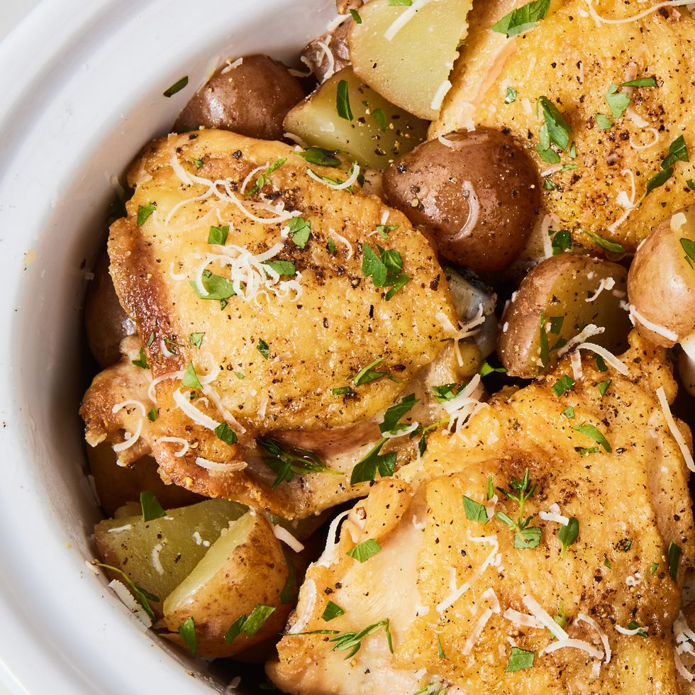

Slow-Cooker-Garlic-Parmesan-Chicken

Garlic Parm Chicken
When you think Parm + chicken, you may be thinking of the melty, saucy
chicken parm. If you’re craving the classic combo but not in the mood to
fry, then this garlic-Parmesan chicken (made in the slow cooker!) is the
chicken dinner for you. Bone-in skin-on chicken thighs ensure a
flavor-packed and tender result. Paired with a few pats of butter, garlic,
and thyme, all the flavors seep into the chicken and tender baby potatoes
for a fully satisfying, comforting meal, that requires very little effort.
Ingredients
- 3 Tbsp. extra-virgin olive oil, divided
- 2 lb. bone-in, skin-on chicken thighs Kosher salt
- Freshly ground black pepper
- 1 lb. baby red potatoes, quartered
- 2 Tbsp. butter, softened
- 5 cloves garlic, chopped
- 2 Tbsp. fresh thyme
- Freshly chopped parsley
- 2 Tbsp. freshly grated Parmesan, plus more for serving
Steps
-
In a large skillet over medium-high heat, heat 1 tablespoon oil. Add
chicken, season with salt and pepper, and sear until golden, 3 minutes
per side.
-
Meanwhile, in a large slow cooker, toss potatoes with remaining 2
tablespoons oil, butter, garlic, thyme, parsley, and Parmesan and season
generously with salt and pepper. Add chicken and cook on high for 4
hours or low for 8 hours, until potatoes are tender and chicken is fully
cooked.
- Garnish with Parmesan before serving.